Many of the projects that you'll find below have been the product of fruitful collaborations with many talented people.
Errol Morris is an American film director, this is his identity. Identity
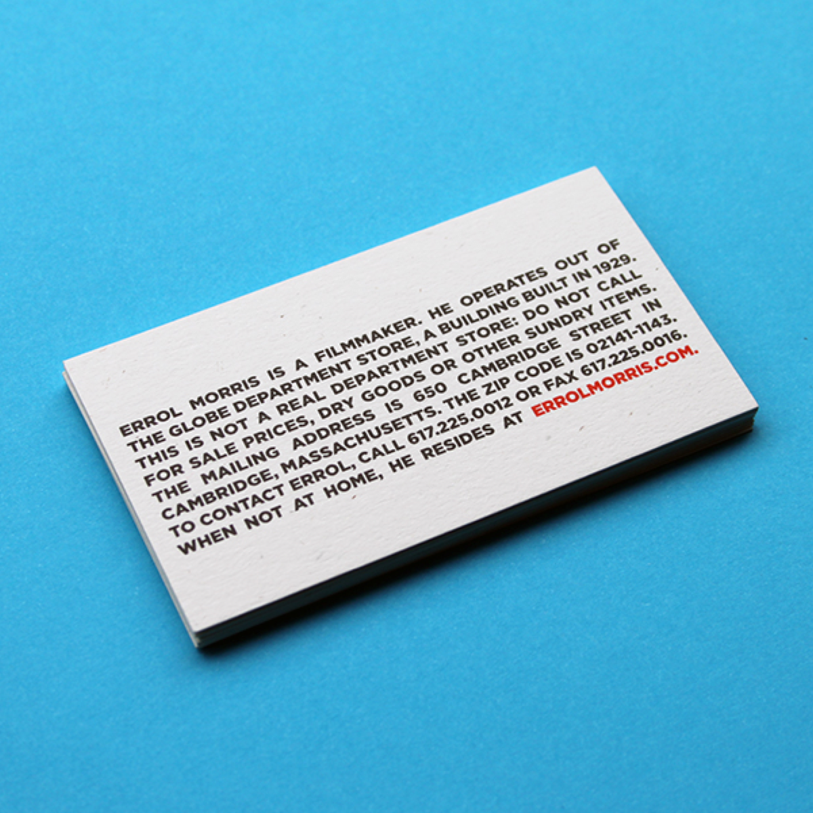
Al Gore, Our choice, a plan to solve the climate crisis. Book + Data Visualization
Peace & Quiet Dialog Station, At the world’s greatest public intersection Installation
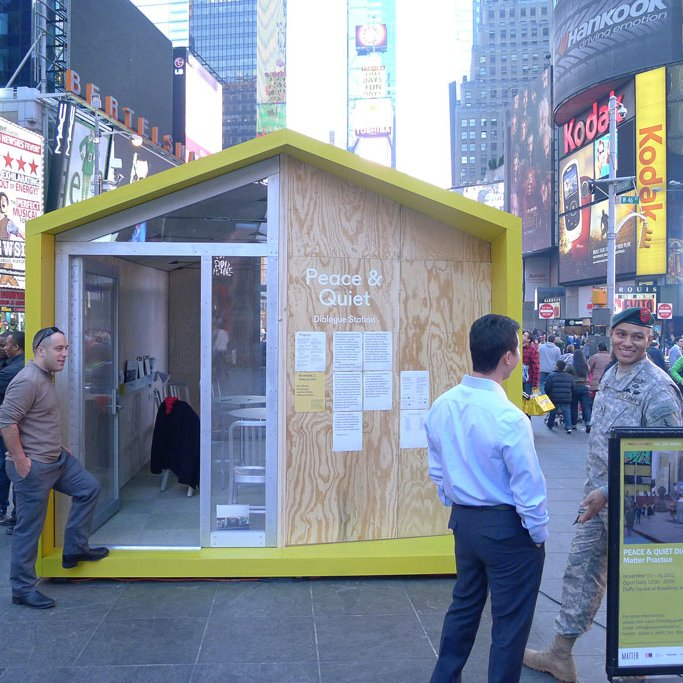
Design should be open and accessible to everyone Exhibition
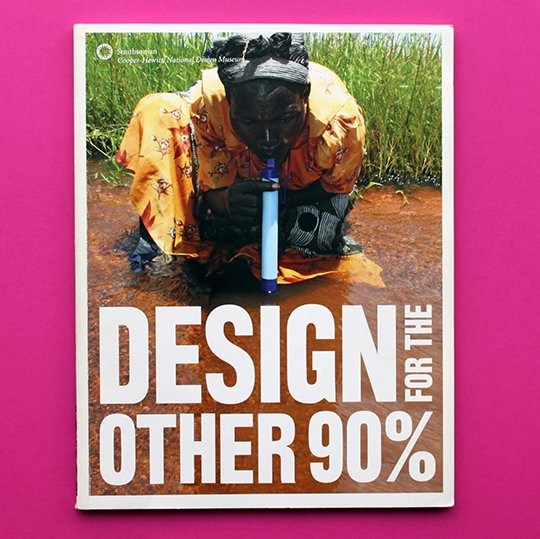
The great plastic tide Data Visualization
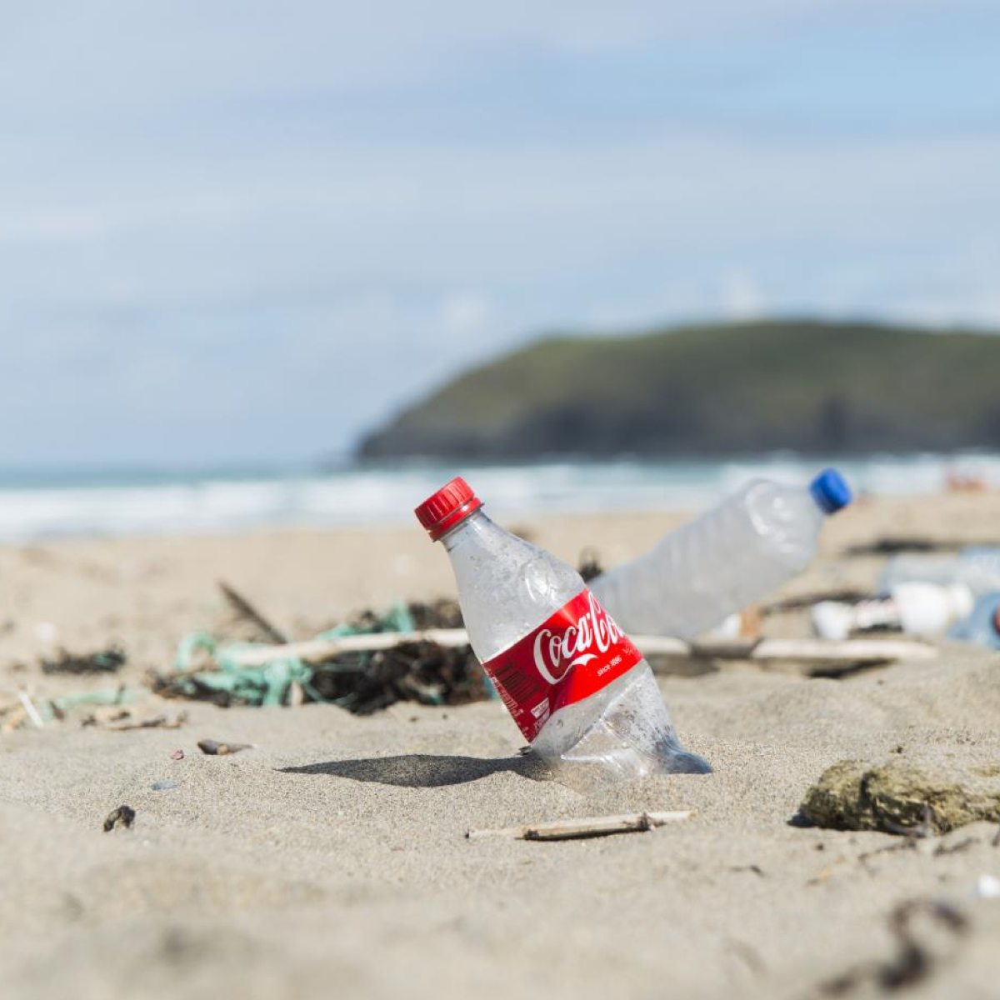
Bruegel, To the Presidents of the European Commission, The European Council and The European Parliament Publication
Death every day. The private firearms arsenal of the world. Data Visualization
Education requires people, money and instruments. Data Visualization
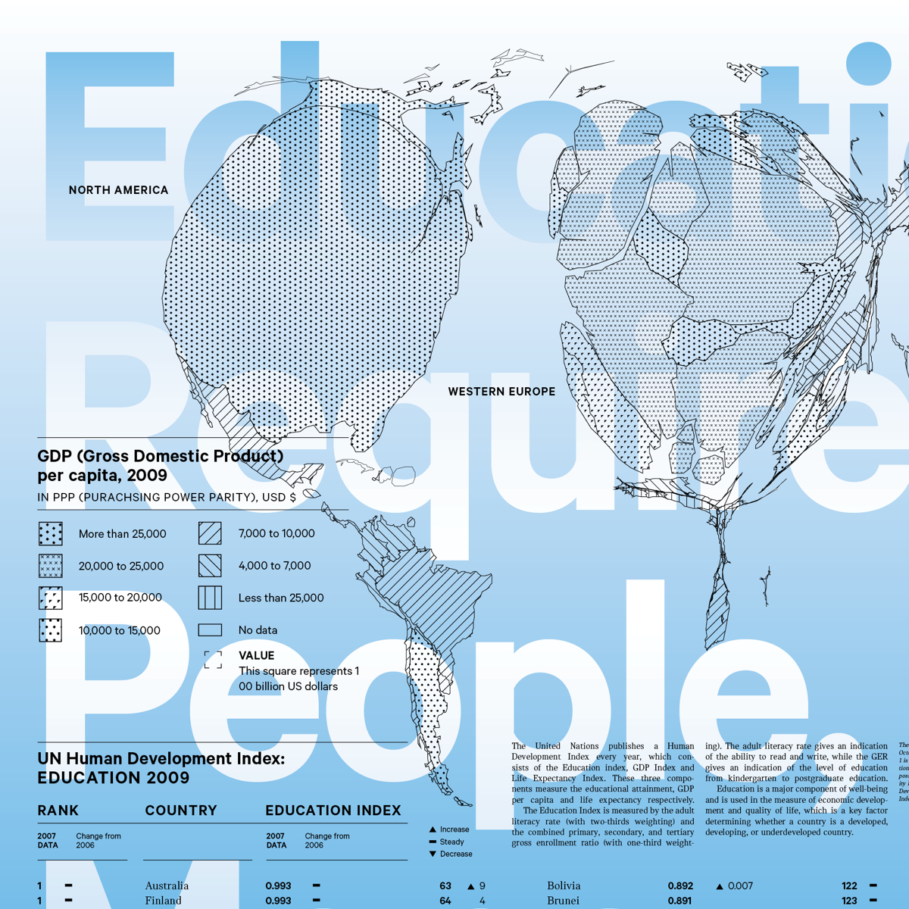
Planets everywhere. As of 4 November 2013, Kepler has detected 3,568 possible new planets. Data Visualization
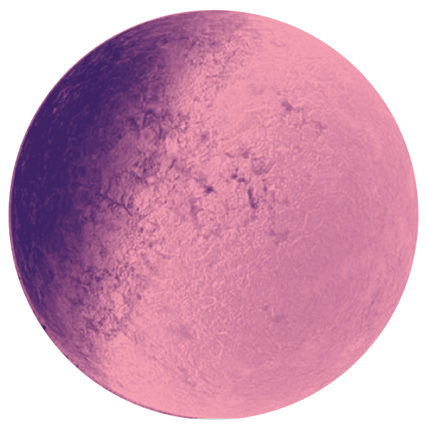
How do you brand an invisible territory? Exhibition
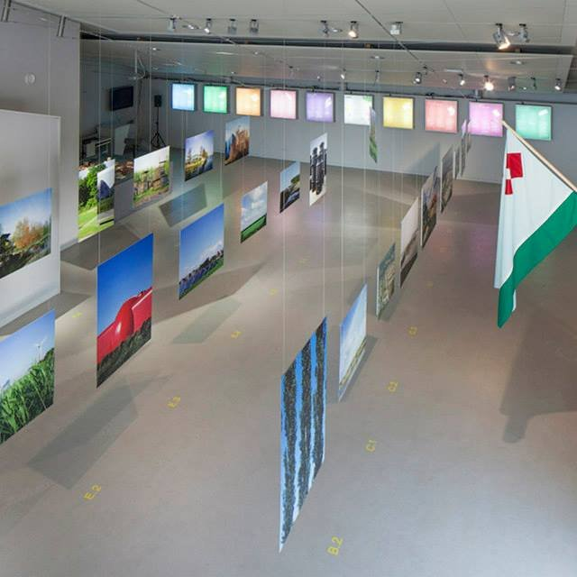
Search & Supply: The Impact of Uninterrupted Access Data Visualization
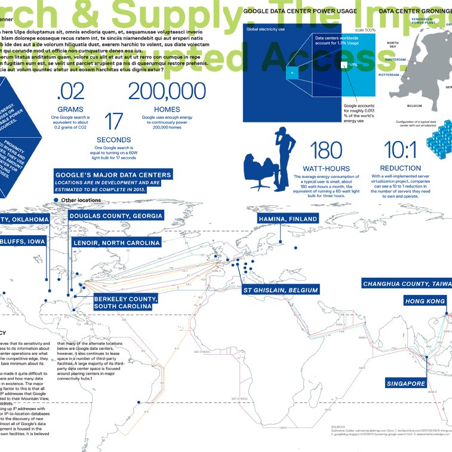
MoneyLAB: Digital experiments with revenue models, payment systems and currencies Conference
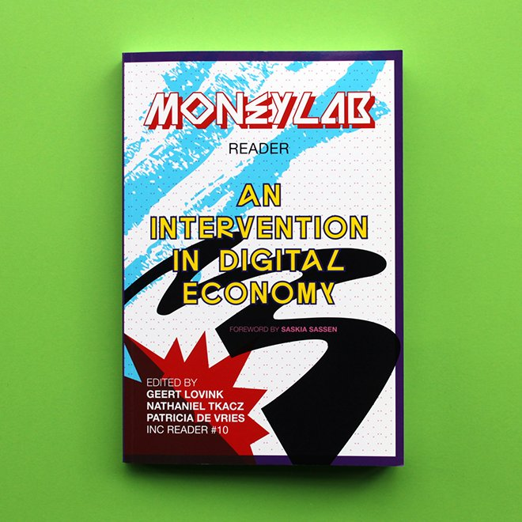
Knoll: A modernist universe Book
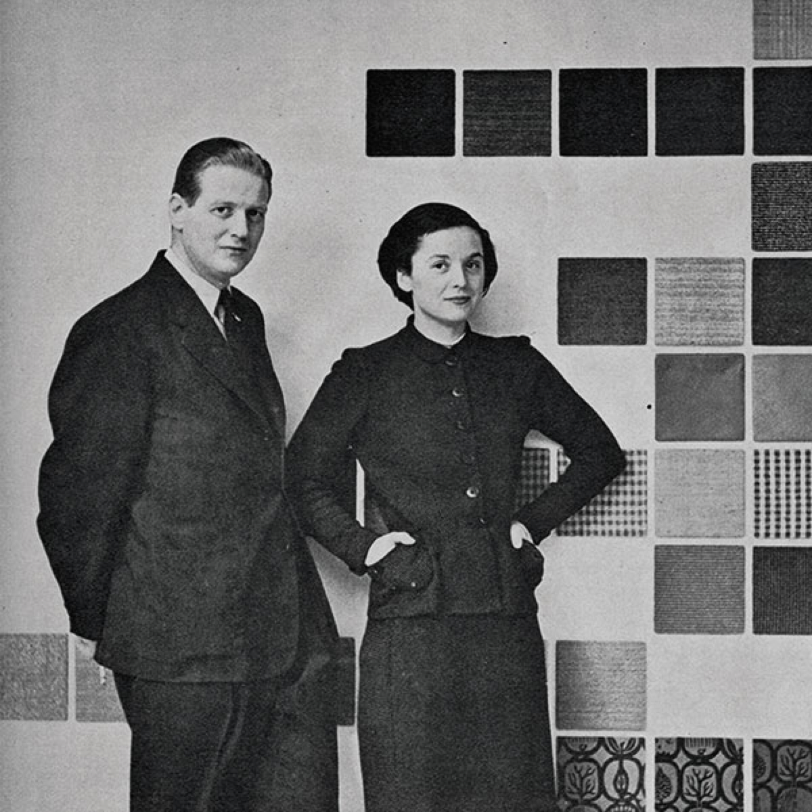
Monuments can be controversial Book
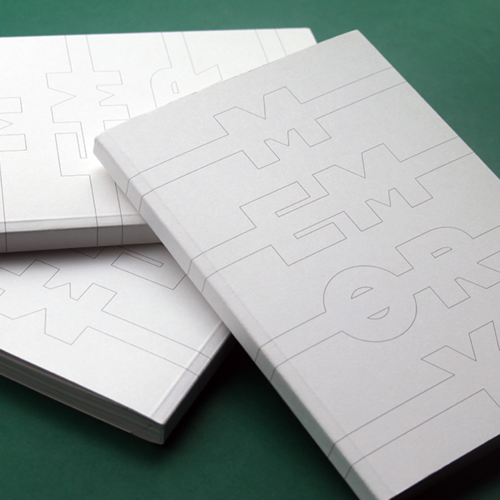
We don’t want to be THE bar, not even plan b, but plan c. Identity, Places, Stories
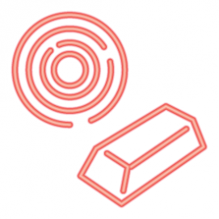
A slow life initiative. Identity, Interactive, Places
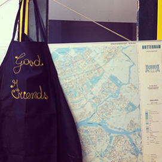
What do cheese, wine and bio tech all have in common? Places, Research, Stories
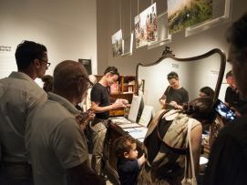
Make Your Choice: 2014 EU Election Guide Identity, Interactive
18th century palaces updated for the 21st. Identity, Interactive, Transparency
Partly Windy, Partly Wild, Totally Wonderful. Campaign, Identity, Transparency, Voices
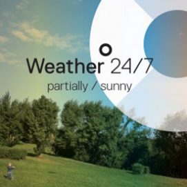
We love typography, we love books, so we wrote and designed a book about typography. Idea, Research, Stories
It’s not always sunny in Rotterdam. Identity, Places, Transparency
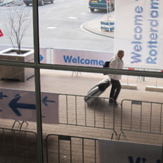
A booked that spawned an artists’ revolt at the Guggenheim in New York City. Idea, Identity, Places
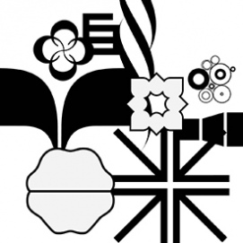
New York City & Drawing & Painting & Sculpture & School. Identity, Places, Stories
Wine is sunlight, held together by water. Identity
A Queen, a royal palace and a museum in Bangkok. Identity, Places
Ravenna mosaic capital of Italy. Identity, Research, Stories
Artists unite in Beverly Hills! Idea, Identity
Who Says What: Political Manifesto Guide Campaign, Interactive
What design looks like on no budget, literally. Identity, Places, Research, Stories, Transparency, Voices
A museum that started in a closet. Places, Stories, Voices
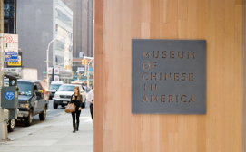
The environment is important. People need to be clued in. Research, Stories, Transparency, Voices
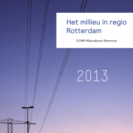
An experimental security encryption based on Trait Theory. Idea, Transparency
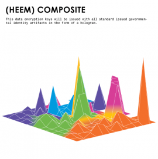
Amateurs are going to save the world. Identity, Interactive, Places, Research, Voices
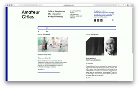
From Ernest van der Kwast with love. Identity, Stories, Voices
How to reinvent moving images with one eye on the horizon. Identity, Places, Research
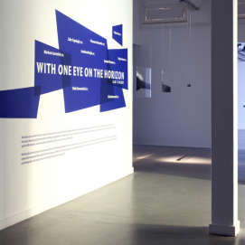
Tolerance: Deviances and Reconciliations Identity, Transparency
A rich testing ground for architectural innovation.
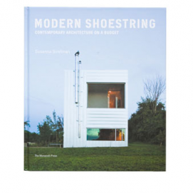
Cyclist’s best-known escape route from New York City– loved, hated and endured. Stories, Voices
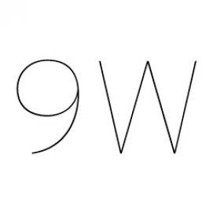
Greg Yang Design needed a business card. Identity
Analyzing the traditions of flower arranging of the 16th century through the 21st. Idea, Research, Stories, Transparency
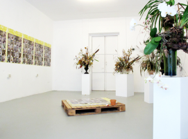
Because of the scope of work this book took many people to make it. Research, Stories, Voices
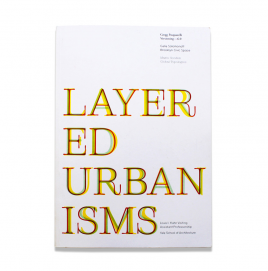
Hautboy Hill Farm was founded in 1748. Identity, Places, Stories
Sleep is important, but does it have to be all in one go? Idea, Research, Stories, Transparency
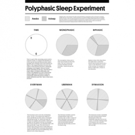
Follow
Contact
info@contentcontext.org+44 (0)7 445 688 400London, United Kingdom
All work copyright 2017